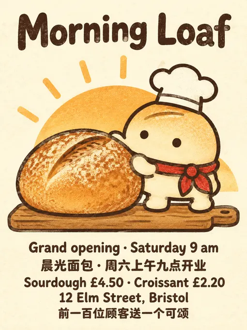
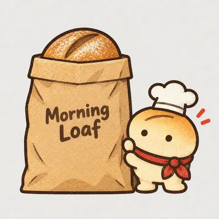
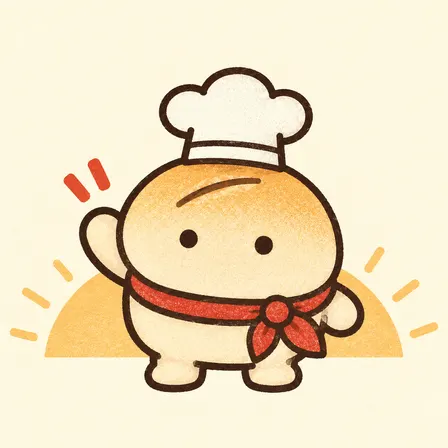
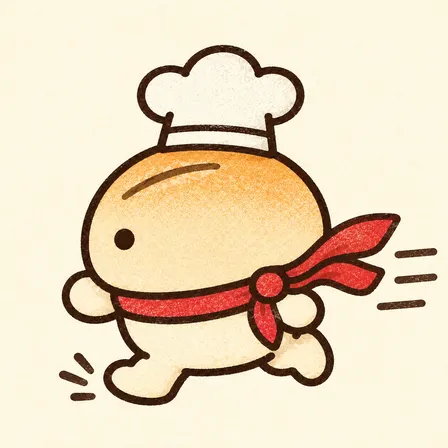
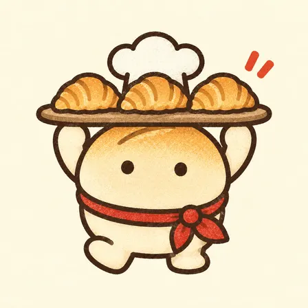
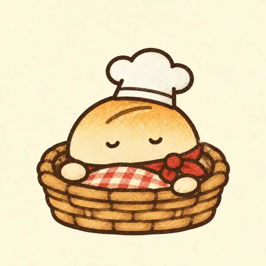

tmchow/illo-skill: image test, 2026-11-08
The same brief for every skill: a 3:4 poster for a made-up bakery with six exact lines of English and Chinese text, a square photo of a kraft-paper bag printed with the shop's name, and four square pictures of one mascot in four poses. Claude Code (Claude Opus 5.5) made them with the skill in a throwaway sandbox; every image call went to the newest model of the family the skill asked for (GPT Image 2.6, Nano Banana 2.1 or FLUX 3). 9.5 minutes; 10 image calls ($0.085), drawn by gpt-image-2.6-ext. All results · The brief · How it is scored
Result
Followed the brief · a look of its own
The pictures












The text, read letter by letter
Read by OCR (macOS Vision, five passes); a line OCR could not find as written was looked at by hand.
| Asked for | Written |
|---|---|
| Morning Loaf | right |
| Grand opening · Saturday 9 am | right |
| 晨光面包 · 周六上午九点开业 | right |
| Sourdough £4.50 · Croissant £2.20 | right |
| 12 Elm Street, Bristol | right |
| 前一百位顾客送一个可颂 | right |
| Morning Loaf (on the bag) | right |
The mascots (judged by a vision model)
| Same character in all four (1-5) | 5 |
|---|---|
| Poses as asked (of 4) | 4 |
| Chef's hat and red scarf in all four | yes |
| Text on them | no |
The judge's note: All four clearly depict the same round bun mascot with matching colors, face, chef hat, and red scarf.
How it went (the session's closing message)
All six pictures are in `~/work/output/`. I made them with the illo skill, set up Bun as a new mascot for it, and used the same warm print look throughout: cream paper, dark-brown linework, bakery red only on the scarf. **How they were made:** illo normally draws through the Codex app, the Grok app or an OpenRouter account, and none of those is on this machine. Its Codex route runs OpenAI's image model, so I sent the skill's own prompts, sizes and reference images to OpenAI's image API instead (served by GPT Image 2.6). Before rendering, I followed the skill's character-builder steps to make Bun's character file and reference drawing. Every later image was drawn from that reference, and the first good mascot image was also used as a style guide for the rest. I checked each image against the skill's quality checklist. - **`poster.png`** (768×1024, 3:4): Bun pushes a big sourdough loaf onto a board in front of a rising sun. "Morning Loaf" is the large title, and the other five lines sit underneath it. All six match the brief exactly, including "·", "£" and the Chinese, and there is no other text. - **`product.png`** (1:1): an upright kraft bag on light grey with "Morning Loaf" in dark brown and a sourdough loaf sticking out of the top. Bun holds the bag up from the right. The first try failed because one of Bun's arms reached around the bag, so I made it again. - **`mascot-1.png`**: Bun from the front, waving, with a sunrise behind. - **`mascot-2.png`**: Bun side-on, running left, scarf blowing behind. - **`mascot-3.png`**: Bun holding a tray of three croissants over its head. - **`mascot-4.png`**: Bun asleep in a wicker basket under a checked tea towel. The first version had "zz" sleep letters, which counted as text, so I removed them with the skill's own edit prompt. All four mascot pictures show the same body, two dot eyes, white chef's hat and red knotted scarf. **Where the skill's rules changed the brief:** - Bun also appears on the poster and the bag, because the skill puts its mascot in every picture. - The "warm morning light" and "soft studio light" are suggested with a flat sun shape and plain shapes. The skill's print style doesn't allow photo lighting or soft shadows. - In mascot-4, Bun's dot eyes are drawn closed so it reads as asleep. That bends the skill's rule that the face never changes. DELIVERABLE: ~/work/output/